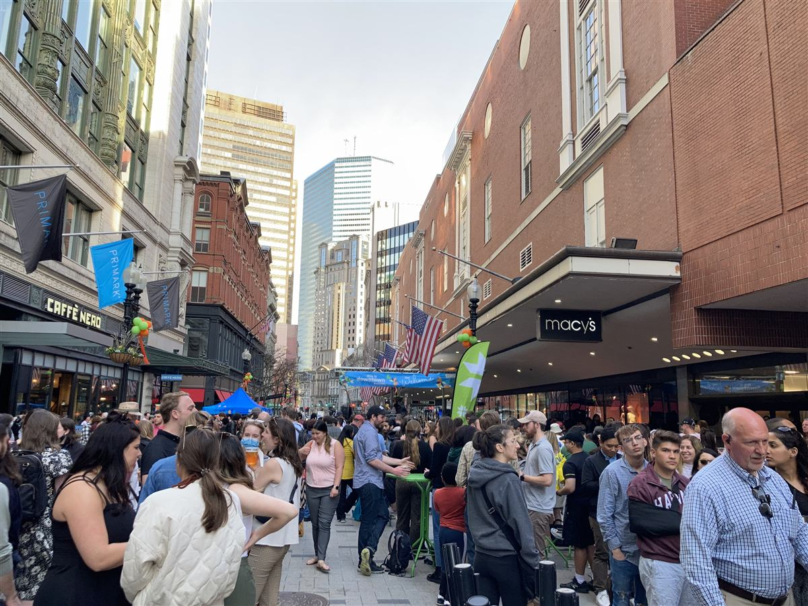
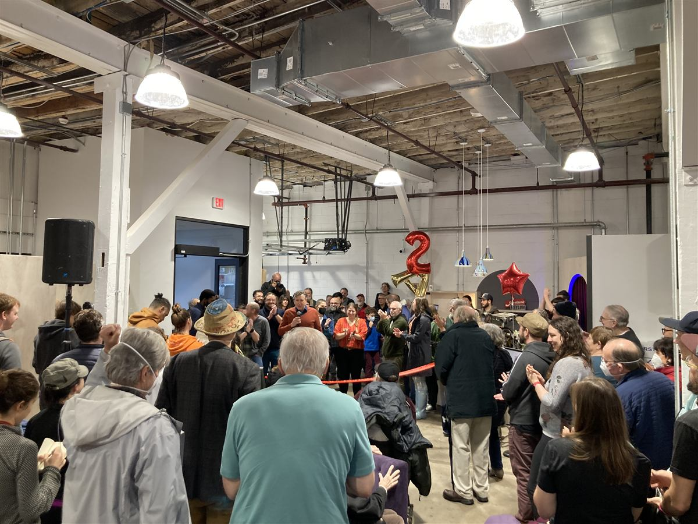

About this project
This research is part of the City of Boston's Space for Public Culture project — a plan to hardwire culture into the fabric of Boston.
The Mayor's Office of Arts and Culture (MOAC) is building a cultural infrastructure plan for the City of Boston. The goal of this Space for Public Culture plan is to protect, strengthen and expand Boston's cultural ecosystem through a focus on the spaces where arts and culture thrive. This will guide the work of MOAC's cultural planning team, informing how it collaborates with partners inside and outside City Hall.
As part of this work, the City of Boston is seeking your help to map Boston's cultural spaces. This exercise will provide the City with an up-to-date count of Boston's cultural spaces and the information related to them which, in turn, will support decision-making, policy, resourcing, and planning.
What is a 'cultural space'?
Any buildings or spaces where arts and culture is happening — be it daily, on the weekends, or once a month. This can include arts-specific spaces like studios, galleries, music venues and theaters, but also gathering places (like public spaces or faith-based spaces), retail spaces (like bookstores or record shops), learning spaces (like art courses or schools) or food and drink spaces (like bars or restaurants) that are sites for cultural activity.
If you feel a place is part of how you experience arts and culture in Boston — make sure it's on the map!



Own or operate a space?
If you own, operate, work for or volunteer at a specific cultural space in Boston, please tell us more about it. Find your space on the map and click on the 'Deep Dive' link in the space information list. If your space is not on the map, please add it. You will then be able to access the Deep Dive link once the space appears on the map. This deep-dive information will help the City and its partners to develop policies and make decisions that are informed by the realities of cultural space operating in Boston. What's destabilized your space? What's helped strengthen it? Where could the City of Boston build support structures for your space, where could it remove obstacles? You can also access the Deep Dive questions through the button below.
Cultural space deep diveFor more information about the Mayor's Office of Arts and Culture and this project, please contact Raisa Saniat, Director of Cultural Planning
raisa.saniat@boston.gov
Reach out for information about this map or to report any technical difficulties
info@bostonculturemapped.com